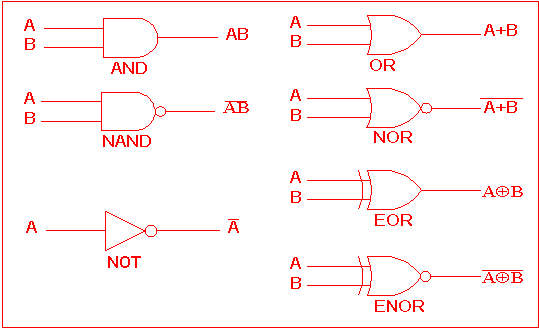

class: center, middle <!-- !Here is where the actual presentation starts! --> <img src="pictures/github-logo.png"> # For Historians <img src="pictures/octocat.png"> --- class: center, middle <img src="pictures/octocat.png"> --- class: center, middle --- --- ## Logical Gates  --- name: code class: left, top # So what's this 'code' you speak of? --- template:code ## Ruby --- template:code ## Inform7 --- template:code ## Brainfuck --- template:code 1. Ask user for to input her name and store it in [name] 2. Count the number of letters in the name and store it in [count] 3. print "Hello, [name], did you know you have [count] letters in you name?" -- 4. if [count]<3 print "Oh my, [name], did someone tell you have a very short name?" --- class:top,left ```python name = input() count = len(name) print("Hello, ",name,"did you know you have ",count," letters in your name?") if count>3: print("Oh my,"[name]," did someone tell you have a very short name?") ``` --- class:center #Open Source Software --- class:center,middle #So what's **GIT**? --- class:top #Version control --- class:left,top # Version Control + _Track_ developments and changes in your documents + _Record_ the changes you made to your document in a way that you will be able to understand later + _Experiment_ with different versions of a document while maintaining the original version + _‘Merge’_ two versions of a document and manage conflicts between versions + ___Revert___ changes, moving ‘backwards’ through your history to previous versions of your document --- class:top,left #GitHub --- --- # Key Terms - Repository <!-- A repository is usually used to organize a single project. Repositories can contain folders and files, images, videos, spreadsheets, and data sets – anything your project needs.--> - Branch <!-- Branching is the way to work on different versions of a repository at one time.--> - Master <!-- By default your repository has one branch named master which is considered to be the definitive branch. We use branches to experiment and make edits before committing them to master. When you create a branch off the master branch, you’re making a copy, or snapshot, of master as it was at that point in time. If someone else made changes to the master branch while you were working on your branch, you could pull in those updates. --> - Commit <!-- On GitHub, saved changes are called commits--> - Commit Request <!-- Each commit has an associated commit message, which is a description explaining why a particular change was made.--> - Pull - Pull Request <!-- Pull Requests are the heart of collaboration on GitHub. When you open a pull request, you’re proposing your changes and requesting that someone review and pull in your contribution and merge them into their branch.--> - Diffs <!-- Differences - Pull requests show diffs, or differences, of the content from both branches. The changes, additions, and subtractions are shown in green and red.--> --- background-image: url(panorama.jpg) # Some links [Markdown Cheatsheet](https://github.com/adam-p/markdown-here/wiki/Markdown-Here-Cheatsheet) [You can use numbers for reference-style link definitions][1] [1]: http://slashdot.org --- #Basic _Remark.js_ syntax ## Quotes > Blockquotes are very handy in email to emulate reply text. > This line is part of the same quote.